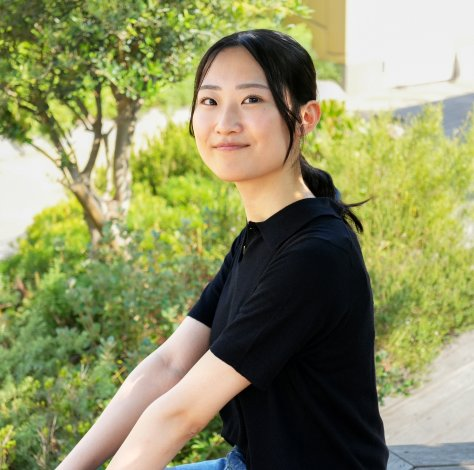
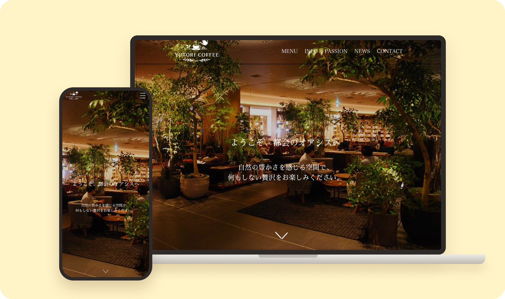

困ったときの、
バナナでありたい。
誰かの"困った"に、自分から動く。
竹内七菜のポートフォリオです。
ABOUT
誰かの役に立つことが、
私の原動力です。

Nana Takeuchi
竹内七菜
私が一番やりがいを感じるのは、
誰かの困りごとに気付き、自分から動いて解決できたときです。
アルバイトでは、初めて組む仲間とも積極的に言葉を交わして働きやすい雰囲気をつくり、忙しい時間帯こそお客様一人ひとりへの丁寧な確認を心がけてきました。チーム制作では、わからないことを早めに聞き、話し合いの場に関わり続けることで、制作をスムーズに進めることに力を注ぎました。
相手の立場に立って困りごとを汲み取り、チームで形にする。その姿勢で、チームの成果に貢献したいと考えています。
私の強み
1 困りごとが起きる前に、自分から声をかけられる
アルバイトで初めて同じシフトに入る人とは、お互いの動き方がわからないまま働くことになります。 そこで、小さなことでも「ありがとう」「ごめんなさい」を伝え、わからないことや気になったことは自分の意見と一緒に共有するようにしました。 その結果、先輩から「以前よりバイト同士の会話が増えて、働きやすくなった」と言ってもらえました。
2 相手の立場に立って考えられる
アルバイト先の飲食店では定期的に半額セールがあり、その期間は予約が通常の約3倍に増えます。 店内が慌ただしかったとしても、お客様は「高級店で過ごす時間」を楽しみに来店されます。 そこで、騒がしい店内でも注文が確実に伝わったと安心していただけるよう、身振り手振りを交えて確認しました。 また、慌ただしさを感じさせないよう、ゆっくりと落ち着いて話すことを心がけました。 その結果、お客様アンケートで私の名前を挙げてお褒めの言葉をいただきました。
3 チームが止まらないよう、伝え方を工夫する
プログラミングスクール ZeroPlus での実践制作にて
意思決定は通話で
全体の意思決定は、チャットではなく通話で行う形を取りました。声のトーンから各案への温度感が伝わり、素早く判断できると考えたからです。実際に、その場で次の作業の方向性まで確認できました。
報連相のタイミング
報連相を意識したチーム活動は初めてだったため、まず講師に「いつ・どのように報告や相談をすべきか」を聞くところから始めました。特に意識したのは、うまくいっていないときの連絡です。体調や予定の急な変化、コーディングでのつまずきなどで締め切りに間に合わないかもしれないとわかった時点で、締め切りの直前ではなくすぐに伝えるようにしました。

CAREER
- 2006年11月三重県四日市市生まれ
- 2022年4月三重県立四日市南高校入学
- 2025年3月三重県立四日市南高校卒業
- 2025年4月中央大学文学部人文社会学科 社会情報学専攻 情報コミュニケーションコースに入学
- 2025年12月プログラミングスクールZeroPlus Webデザインコースに入学
- 2026年4月ZeroPlus Webデザインコース 卒業

制作の目的
老舗喫茶店のような、訪れた人に安らぎを届けたいというお店の思いに沿った、 サイトを制作することにより来客数アップを狙う
私が担当したこと
配色の方向性づくり、お問い合わせ部分・ハンバーガーメニューのコーディング
「落ち着いた雰囲気」の感じ方は人によって異なります。そこで私は、落ち着いた印象のサイトを20〜30件見比べ、そのサイトからカラーコードを抽出して配色案としてチームに提案しました。抽象的な言葉ではなく実際の色をもとに話し合えるようにしたことで、サイト全体の雰囲気の方向性をすり合わせることができ、メンバー全員が納得できるデザインに落ち着きました。
また、お問い合わせ部分のコーディングでは、目線の動きを意識して入力しやすさを重視しました。どこから入力を始めればよいか迷わないよう、余白などの細部まで丁寧に調整しました。
結果
配色の方向性を早い段階でそろえ、通話での意思決定と早めの報連相を重ねたことで、手戻り無く来客数アップのためのサイトを作ることができました。